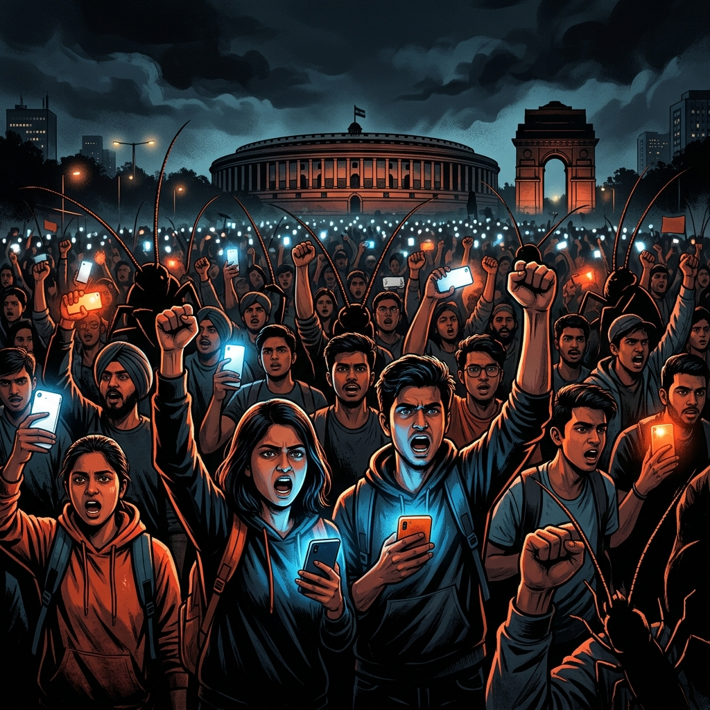

🪳 Cockroach Janta Party (CJP): भारत की सबसे बड़ी Youth Movement की पूरी कहानी
एक Chief Justice की टिप्पणी से शुरू हुई यह Movement कैसे बन गई करोड़ों युवाओं की आवाज़? जानिए CJP की पूरी Timeline, Manifesto, Key People और Latest Updates — सब कुछ एक ही पेज पर।

Cockroach Janta Party (CJP) क्या है?
Cockroach Janta Party (CJP) भारत की एक youth-led, satirical political movement है जो 16 May 2026 को शुरू हुई। यह कोई registered political party नहीं है — यह एक आंदोलन है, एक आवाज़ है, और करोड़ों frustrated युवाओं का digital platform है।
CJP खुद को "Voice of the Lazy and Unemployed" कहती है — लेकिन इसमें कोई कमज़ोरी नहीं, बल्कि ताकत है। जिन लोगों को "cockroach" कहकर नीचा दिखाया गया, उन्होंने इसी शब्द को अपनी resilience (लचीलापन) और survival (जीवित रहने की क्षमता) का प्रतीक बना लिया। ठीक वैसे ही जैसे cockroach हर मुश्किल हालात में survive कर जाता है — भारत का युवा भी हर बाधा के बावजूद खड़ा है।
यह सब कैसे शुरू हुआ? (The Origin Story)
15 May 2026 को Supreme Court of India में एक hearing के दौरान, Chief Justice of India Surya Kant ने कुछ unemployed youth और activists को "cockroaches" और "parasites of society" कहा। यह बात तेज़ी से viral हुई और करोड़ों युवाओं में गुस्सा फैल गया।
अगले ही दिन, 16 May 2026 को, political communications strategist Abhijeet Dipke ने Instagram पर एक page बनाया — नाम रखा "Cockroach Janta Party"। उनका message था simple: "अगर हम cockroach हैं, तो ठीक है। Cockroach कभी मरता नहीं।"
बस एक हफ्ते के अंदर, CJP के Instagram page पर 22 million से ज़्यादा followers आ गए — यह BJP और Congress जैसी established parties के official accounts से भी ज़्यादा था! पहली बार किसी satirical movement ने इतनी तेज़ी से digital traction हासिल की।
CJP Timeline — May से July 2026 तक
CJP का 5-Point Manifesto — Core Demands
CJP ने अपनी 5 "non-negotiable" demands रखी हैं जो judicial reform, electoral integrity, women's representation, media independence, और anti-defection को cover करती हैं:
⚖️ Judicial Reform — No Post-Retirement Rewards
Chief Justices को retirement के बाद Rajya Sabha seat या कोई भी government position नहीं मिलनी चाहिए। Judiciary को truly independent रखने की demand।
🗳️ Electoral Integrity — CEC Accountability
अगर legitimate votes delete किए जाते हैं, तो Chief Election Commissioner पर UAPA (anti-terror law) के तहत कार्रवाई हो। Voter rights की सुरक्षा।
👩 50% Women's Reservation
Parliament और Cabinet दोनों में महिलाओं के लिए 50% reservation लागू किया जाए। True representation की मांग।
📺 Media Independence
बड़े conglomerates (Ambani/Adani) के owned media houses के licenses cancel करो। Independent journalism को बढ़ावा दो।
🚫 Anti-Defection — 20 Year Ban
कोई भी MP या MLA जो party switch करे, उसे 20 साल तक चुनाव लड़ने या public office रखने पर पूर्ण ban। Dala-badlu politics बंद हो।
Key People — इस Movement के चेहरे
CJP का Logo और Symbol — क्या मतलब है?
CJP का official logo एक minimalist smartphone है जिस पर cockroach जैसे antennae (एंटीना) लगे हैं। इसके हर हिस्से का एक गहरा मतलब है:
Smartphone = Digital Generation
Movement digital-native youth की है, जो smartphone पर ही अपनी आवाज़ उठाती है।
Antennae = Connectivity & Resilience
Cockroach के antenna — हमेशा "connected" और "alert" रहने का प्रतीक। Youth never disconnects।
Cracked Screen = Broken But Functional
System टूटा हुआ है, लेकिन चल रहा है — ठीक वैसे ही जैसे cracked screen वाले phone से भी काम चलता है।
Chalo Sansad March — 20 July 2026
20 July 2026 — Parliament के Monsoon Session के पहले दिन, CJP ने "Chalo Sansad" (संसद चलो) march का call दिया। हज़ारों students, Gen Z activists, और common citizens ने Delhi में Parliament की ओर march किया।
Delhi Police ने march की permission deny कर दी थी। फिर भी protesters ने शांतिपूर्ण तरीके से आगे बढ़ने की कोशिश की। Police ने barricades, tear gas, और lathi charge से जवाब दिया। Reports के अनुसार 100 से ज़्यादा लोग injured हुए और कई को detain किया गया।
इसके बावजूद, अगले दिन (21-22 July) protesters Jantar Mantar पर डटे रहे। Opposition leaders जैसे Sharad Pawar और Arvind Kejriwal ने protest site visit करके अपना समर्थन दिया। International media जैसे The Guardian, Washington Post, और Al Jazeera ने भी इस movement को cover किया।
Movement का Impact — क्या बदला?
CJP ने सिर्फ 2 महीने में वो कर दिखाया जो कई political parties सालों में नहीं कर पातीं। इस movement ने कई मायनों में Indian civic discourse को बदला है:
1. Youth Engagement: India के Gen Z ने पहली बार बड़े पैमाने पर political activism में हिस्सा लिया। Social media पर memes share करने से लेकर streets पर march करने तक — यह एक generational shift है।
2. Media Attention: International media (The Guardian, Washington Post, Al Jazeera, BBC) ने Indian youth की frustration को globally highlight किया। यह unprecedented coverage थी।
3. Government Response: Reports के अनुसार, एक Union Minister ने CJP representatives से बातचीत की। हालांकि movement का कहना है कि अभी तक कोई substantive response नहीं आया है।
4. Exam Reform Discourse: NEET-UG paper leak और competitive examination system की खामियां अब national debate का हिस्सा बन गई हैं। Education system reform अब priority list पर आ गया है।
• Sonam Wangchuk Protest Update — Full Story
• SIP Calculator — अपना Financial Future Plan करो
• Income Tax Calculator 2026
• Discover — और Trending News पढ़ो